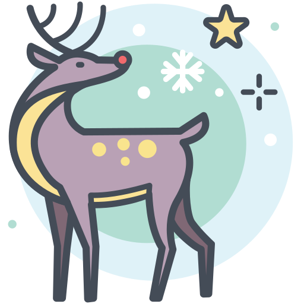

Путешествие в тысячу миль начинается с одного шага (Лао Цзы)
Оставляю в прошлом скучную неинтересную локальную файловую систему ради Всемирной паутины.

Поздравление с Наступающим 2026 годом читайте здесь.
Рождественская пора в самом разгаре! Делюсь с вами праздничными материалами:
Сегодня я разобрала структуру доменного имени моего сайта.
Мой сайт размещён на платформе GitHub Pages, и его адрес выглядит так:
https://durmanchic.github.io/medical_student/.
Доменное имя этого адреса — durmanchic.github.io — состоит из нескольких уровней иерархии DNS (системы доменных имён):
.» в конце полного доменного имени (обычно скрыт). Это вершина всей системы.io. Это национальный домен Британской Индийской Океанической Территории, часто используемый в IT-проектах.github. Это основное имя, зарегистрированное компанией GitHub.durmanchic. Это имя моего аккаунта на GitHub, которое автоматически становится поддоменом для моих сайтов через GitHub Pages.
Таким образом, домен читается справа налево:
io → github.io → durmanchic.github.io.
Важно: часть адреса после домена — /medical_student/ — это не доменное имя, а путь к конкретному репозиторию (папке) на сервере.
а. АПЕЛЬСИН → САЦЬНВЩЮ → ключ = 17
б. АБРИКОС → ЫЬЛГЕЙМ → ключ = 27
а. ФХНЗКЧ → ПРИВЕТ (ключ = 5)
б. ЦЩЕБФ → ВЕСНА (ключ = 20)
Дурманова → ОЭЪЦКЧШЛК
Открытый ключ: (n, e) = (см. ниже, e = 65537)
Закрытый ключ: (n, d) — известен только владельцу
Реальное значение n (3072-битный RSA, 925 десятичных цифр):
2519590847565789349402718324004839917401756973378925395490703462743805652913454351062052379991010904017780572585420634399127146594974067084407088178311602564210743507710106758727761330284206402033122361320872525427481235709243535721967296078154055765538848847019598888806036952305207427881772827017097223547753321728910310891003834845776108810055044223811734196302409144405888910232974195485027237658233588129105239998112430339191720810215890955753381172710448321051684631750236056581010059103108910038348457761088100550442238117341963024091444058889102329741954850272376582335881291052399981124303391917208102158909557533811727104483210516846317502360565810100591031089100383484577610881005504422381173419630240914440588891023297419548502723765823358812910523999811243033919172081021589095575338117271044832105168463175023605658101005910310891003834845776108810055044223811734196302409144......
Примечание: в учебном примере использовались маленькие числа (p=3, q=5), но в реальных системах — такие огромные ключи для защиты данных.
Задание: добавить в базу знаний чат-бота новый вопрос: «Как оплатить заказ?». Я обновила код модели и проверила, справится ли бот, если спросить его другими словами.
Вопрос пользователя: «Какие есть способы внесения денег за покупку?»
Ожидаемый ответ: Информация об оплате.
Ниже приведен лог работы программы:
Анализ результата: К сожалению, модель не справилась с задачей. Несмотря на то, что смысл вопроса про оплату, нейросеть посчитала более похожим вопрос про гарантию (вероятно, из-за контекстных совпадений слов или недостаточного размера обучающей выборки в нашем тесте). Это показывает, что даже современные ИИ могут ошибаться при работе с малыми данными без дополнительной дообучки.
Я взяла фото моего пса Феликса и пропустила его через нейросеть ResNet18. Вот что получилось:
Результаты нейросети (Топ-3):
Вывод: Модель отлично справилась! Она определила, что Феля — корги (Пемброк), с очень высокой точностью. Нейросеть действительно умеет распознавать породы собак.
Теперь я взяла фото гитары из интернета и тоже проверила её нейросетью:
Результаты нейросети (Топ-3):
Анализ: Хм, с гитарой модель справилась хуже. Она увидела "скамейку" (park bench), а не гитару. Возможно, потому что гитара лежит на скамейке, и модель "запуталась" в объектах. Или фото слишком сложное. Значит, нейросети не всегда идеальны!
Вывод для отчёта: Модель хорошо распознаёт собак, но может ошибаться, если объект находится в необычном контексте.
Цель: Построить модель, которая прогнозирует точность анализа по количеству часов практики.
Данные: Столбцы «Часы» и «Точность» из файла task_regression2.csv
📝 Интерпретация:
📋 Примеры прогнозов:
| Часы | Точность |
|---|---|
| 1.5 ч | 60.5% |
| 3.0 ч | 67.3% |
| 5.0 ч | 76.4% |
| 7.0 ч | 85.5% |
| 10.0 ч | 99.2% |
Построено на Python • scikit-learn • Линейная регрессия
Тема урока: Классификация данных с помощью алгоритма Decision Tree
Задание 1 — Кредитный датасет:
Обучили модель предсказывать одобрение кредита на основе данных о клиентах (возраст, доход, пол и др.).
Задание 2 — Страхование КАСКО:
Сгенерировали датасет с параметрами: возраст, стаж вождения, число ДТП. Цель — предсказать возможность заключения страхования.
💡 Примечание: низкая точность во втором задании объясняется случайной генерацией данных без реальных закономерностей — для учебного примера это нормально.
Python • scikit-learn • DecisionTreeClassifier
Иконки: